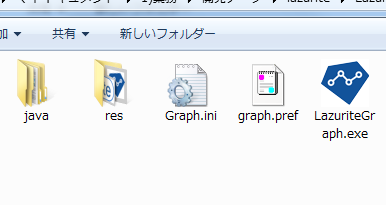

概要
特定の書式に従って送信される数値データをリアルタイムにグラフ化することができるツールです。最大で４つのグラフを同時に表示することができ、グラフのタイトルや、グラフ毎に軸の数、ラベルを任意に設定することができます。

1. ダウンロードページからLazuriteGraphのzipファイルをダウンロードしてください。
2. ダウンロードしたzipファイルを解凍します。
解凍後のファイルがこちら

3. これらのファイルをLazuriteIDEがインストールされているフォルダに移動します。
LazuriteIDEは通常であれば c:\LazuriteIDEにインストールされています。
途中でこのようなメッセージが表示されますが、「はい」を選択してください。
4. ファイル移動後の結果はこのようになります。
以上でインストールは完了です。
LazuriteGraphはLazuriteIDEに拡張して使用するソフトウエアです。
MITライセンスに準じて配布しています。